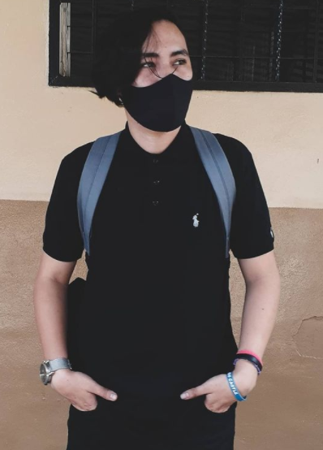

Jairo Josué Agreda Tesorero
Actualmente curso el 4to año de la carrera Diseño Gráfico Multimedia en UNASA.
Hace 7 años, cuando cursaba el octavo grado en el C.E. INSA la fundación Gloria de Kriete
nos presentó el Programa Oportunidades que consiste en una beca de estudio complementario
donde se estudian 7 materias y la modalidad es full time, estudiar en el instituto por la mañana
y por la tarde en el Oportunidades. Luego de platicarlo con mis padres y a pesar de las dudas y la inseguridad
que me rodeaba envíamos la solicitud.
Luego de superar algunos malos entendidos y llendo a hacer el exámen de admisión en el último día
pasé las diferentes etapas para poder ser parte del programa que me ayudaría a crecer en muchos
ámbitos de mi vida. Mantener las calificaciones requeridas, tanto como en el instituto como en la fundación
en el último año de mi bachillerato gracias a Dios pasé la paes y las diferentes pruebas que la fundación requerida
gracias a Dios logré obtener la beca para estudiar la licenciatura en Diseño Gráfico Multimedias
Estudios Realizados
- UNASA Univeridad 2018-2022
- C.E. INSA Tercer Ciclo/Bachillerato 2013-2017
- C.E.C.M.A. Carpinello Segundo Ciclo 2012-2010
- C.E.U. Bella Vista Primer Ciclo 2009-2007